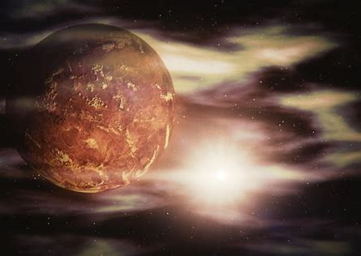
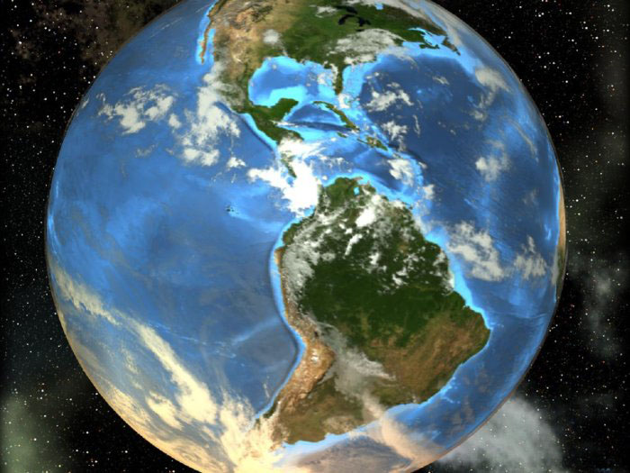
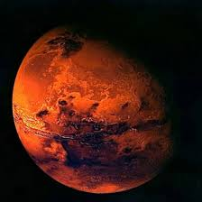
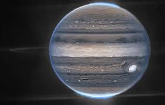
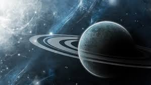
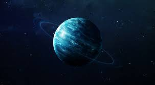
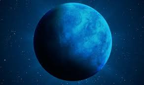
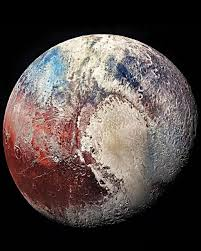

Головна
Головна
Знайомство із Сонячною системою
Сонце

Меркурій

Венера

Земля

Місяць

Марс

Юпітер

Сатурн

Уран

Нептун

Плутон

Стародавні греки саме ці зірки і назвали планетами, що означає «мандрувати».
Римляни називали ці п’ять планет на честь своїх богів:
- Меркурій;
- Венера;
- Марс;
- Юпітер;
- Сатурн.
Інші планети відкрили пізніше.
Закони руху планет навколо Сонця відкрив німецький учений Йоган Кеплер , а пояснив цей рух Ісак Ньютон Саме завдяки дії на планети сил всевсвітнього тяжіння , вони не можуть полетіти в космічний простір, а рухаються навколо Сонця по еліптичних орбітах.
9 планет, що обертаються навколо Сонця, і саме Сонце утворюють Сонячну систему.
Одна з планет Сонячної системи більша за нашу Землю в 11 разів, а інша – розміром із Місяць. Одна планета оточена кільцями льоду, а на іншій температура поверхні сягає 482 оС. У однієї планети є 21 супутник, подібний до нашого місяця, а деякі взагалі не мають супутників. Деякі тверді й кам'янисті, інші складаються з газу.
Сучасні вчені поділили планети на «зовнішні» та «внутрішні»
Внутрішні планети називають земними, оскільки вони щільні, кам’янисті й тверді.
До цієї групи планет належать:
- Меркурій;
- Венера;
- Земля;
- Марс.
- Юпітер;
- Сатурн;
- Уран;
- Нептун;
- Плутон.
Зовнішні планети газоподібні вони більші за розміром за земні, але менш тверді. До зовнішніх планет належать:

Остання зовнішня планета – Плутон – найбільш унікальна , оскільки вона не земна і не газоподібна.